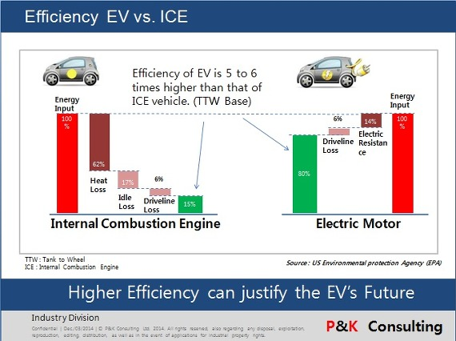

Cum este posibil ca o Tesla să concureze cu un Lamborghini care costă de 3 ori mai mult?
Este adevărat că există vehicule care bat Tesla. Totuși cum este posibil ca Tesla să bată mașini care costă cum mult mai mult?
Explicația este destul de simplă, fără a intra în prea multe detalii tehnice, un motor electric este mai ieftin și lucrează mai rapid.
Odată ce un ev are o baterie care să ofere chiar și putere moderată, vehiculul are capacitatea de a accelera rapid.
La o mașină electrică cea mai scumpă componentă este bateria, pe când la una termică este motorul. Așa se face că pentru mai multă putere la o mașină obișnuită prețul va avea
creșteri remarcabile.
”Torque” sau momentul forței este factorul care face un motor electric mai rapid, deoarece acesta are puterea disponibilă ”mai repede”, dispunând de o accelerație mai rapidă.
